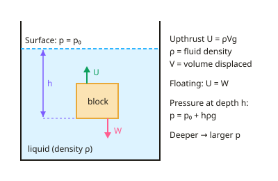

A-level Physics Year 12 · Topic 7
Fluids and material properties
Fluids and material properties looks at how liquids and gases push on objects, how fluids flow, and how solid materials stretch and break.
We will study density, pressure in fluids and upthrust, viscosity and Stokes' law, and the falling-ball practical.
Then we compare the stress–strain behaviour of ductile, brittle and polymeric materials, and measure the Young modulus of a wire.
- 5 subtopics
- 240 questions
- Free: 7.1 notes and 10 questions
In this topic
- 7.1Density, pressure in fluids and upthrustFree below · 59 questions
- 7.2Viscosity, laminar and turbulent flow and Stokes' lawOpen in Full Marks · 25 questions
- 7.3Practical: falling-ball method for the viscosity of a liquidOpen in Full Marks · 59 questions
- 7.4Stress–strain behaviour of ductile, brittle and polymeric materials, hysteresis and elastic strain energyOpen in Full Marks · 72 questions
- 7.5Practical: determining the Young modulus of a wireOpen in Full Marks · 25 questions
7.1 · Free notes
Density, pressure in fluids and upthrust

Key points
- Density is mass per unit volume, ρ = m/V, with unit kg m⁻³. 1 g cm⁻³ = 1000 kg m⁻³, and water is about 1000 kg m⁻³.
- Pressure is normal force per unit area, p = F/A. The SI unit is the pascal (Pa), where 1 Pa = 1 N m⁻² = 1 kg m⁻¹ s⁻².
- In a fluid at rest, the pressure due to the fluid at vertical depth h is p = hρg. This comes from the weight of the column of fluid above.
- Total pressure at depth = atmospheric pressure + hρg. Atmospheric pressure is about 1.0 × 10⁵ Pa, so a graph of p against h is a straight line with an intercept at p₀.
- Pressure at a point in a fluid acts equally in all directions and perpendicular to any surface. It increases linearly with depth.
- Pressure depends only on depth, fluid density and g. It does not depend on the shape or width of the container or on the amount of liquid. Points at the same depth in the same connected liquid have the same pressure.
- Upthrust exists because pressure increases with depth. The upward force on the lower face of a submerged object is greater than the downward force on its upper face.
- Archimedes' principle: the upthrust on a body equals the weight of fluid displaced, U = ρ_fluid × V × g. V is the volume of fluid displaced, which is the submerged volume.
- A body floats when upthrust = weight. This needs average density less than the fluid, and the fraction submerged = ρ_object/ρ_fluid. If U < W the body sinks.
- Apparent weight (e.g. on a newtonmeter) = W − U. The density of an irregular solid can be found from ρ = [W/(W − U)] × ρ_fluid.
- Exam tips: use g = 9.81 N kg⁻¹ and convert to SI units (1 cm³ = 10⁻⁶ m³). A floating object displaces its own weight of fluid, not its own volume. State clearly that h is the vertical depth.
In more detail
- Worked pressure at depth: 10 m under sea water (ρ = 1030 kg m⁻³) → hρg = 10 × 1030 × 9.81 = 1.01 × 10⁵ Pa; total ≈ 2.02 × 10⁵ Pa.
- Worked density from upthrust: an object weighs 3.0 N in air and 2.0 N in water → U = 1.0 N → ρ(object) = ρ(water) × W ÷ U = 3000 kg m⁻³.
- Hydraulics: pressure is transmitted equally through a liquid, so a small force on a small piston produces a large force on a large piston (F₁/A₁ = F₂/A₂).
- Floating fraction: an ice cube (ρ = 920 kg m⁻³) in water floats with 920/1000 = 92% of its volume submerged.
Practice
Density, pressure in fluids and upthrust: 10 questions
Pick an answer to check it, or open the answer for the explanation.
1. A metal block measures 10 cm × 5.0 cm × 4.0 cm and has a mass of 540 g. What is its density?
- 270 kg m⁻³
- 2.7 kg m⁻³
- 27 000 kg m⁻³
- 2700 kg m⁻³
Show answer
D: 2700 kg m⁻³. V = 200 cm³ = 2.0 × 10⁻⁴ m³ and m = 0.540 kg, so ρ = 0.540/2.0 × 10⁻⁴ = 2700 kg m⁻³. Equivalently 2.7 g cm⁻³ × 1000.
2. Three containers of different shapes are filled with the same liquid to the same height. Compare the pressures at their bases.
- Greatest in the widest container
- Greatest in the narrowest container
- The same in all three containers
- Greatest in the container holding most liquid
Show answer
C: The same in all three containers. p = hρg depends only on vertical depth, density and g. Container shape, width and total weight of liquid do not matter, so the pressures are equal.
3. A fully submerged object has volume 2.0 × 10⁻³ m³ in water of density 1000 kg m⁻³. What is the upthrust on it? (g = 9.81 N kg⁻¹)
- 196 N
- 2.0 N
- 9.81 N
- 19.6 N
Show answer
D: 19.6 N. U = ρVg = 1000 × 2.0 × 10⁻³ × 9.81 = 19.6 N. This is the weight of 2.0 kg of displaced water.
4. An object weighs 8.0 N in air and has an apparent weight of 5.0 N when fully submerged in water. What is its density?
- 1600 kg m⁻³
- 2700 kg m⁻³
- 5000 kg m⁻³
- 3000 kg m⁻³
Show answer
B: 2700 kg m⁻³. Upthrust = 3.0 N, so the weight of water displaced is 3.0 N and the volumes match. ρ = (W/U) × ρ_water = (8.0/3.0) × 1000 ≈ 2700 kg m⁻³.
5. A uniform block of density 800 kg m⁻³ floats in water of density 1000 kg m⁻³. What fraction of its volume is submerged?
- 0.20
- 0.80
- 1.25
- 0.25
Show answer
B: 0.80. Floating means U = W, so ρ_water × V_sub × g = ρ_block × V × g. V_sub/V = 800/1000 = 0.80.
6. What is the origin of the upthrust on a submerged object?
- Fluid pressure acts only upwards on the object
- The pressure on the lower surface is greater than on the upper
- The object loses mass when it is in a fluid
- Gravity weakens inside a fluid
Show answer
B: The pressure on the lower surface is greater than on the upper. Pressure increases with depth, so the upward force on the bottom face exceeds the downward force on the top face. The net force is the upthrust.
7. An ice cube floats in a glass of water, filled to the brim without overflowing. What happens to the water level as the ice melts?
- It rises then falls
- It stays exactly the same
- It falls slightly
- It rises and water overflows
Show answer
B: It stays exactly the same. The floating ice displaces its own weight of water. Once melted, it becomes the same weight and so the same volume of water as was displaced, and the level is unchanged.
8. A ship sails from the sea into a freshwater river (less dense). What happens?
- It sits lower; upthrust is unchanged, displaced volume is greater
- It floats higher because upthrust increases
- It sits lower because its weight increases
- It stays at the same level
Show answer
A: It sits lower; upthrust is unchanged, displaced volume is greater. A floating ship has U = W, which is unchanged. Fresh water is less dense, so a larger volume must be displaced to give the same upthrust, and the ship sits lower.
9. A diver is 12 m below the surface of the sea (ρ = 1030 kg m⁻³). Atmospheric pressure is 1.0 × 10⁵ Pa. What is the total pressure on the diver? (g = 9.81 N kg⁻¹)
- 1.2 × 10⁵ Pa
- 2.2 × 10⁵ Pa
- 1.0 × 10⁶ Pa
- 3.2 × 10⁵ Pa
Show answer
B: 2.2 × 10⁵ Pa. Total p = p₀ + hρg = 1.0×10⁵ + 12 × 1030 × 9.81 ≈ 1.0×10⁵ + 1.2×10⁵ = 2.2×10⁵ Pa. The 1.2×10⁵ Pa option is the pressure due to the water alone, leaving out the atmosphere.
10. A block of mass 0.60 kg and volume 8.0 × 10⁻⁴ m³ floats in water of density 1000 kg m⁻³. What volume of the block is submerged?
- 6.0 × 10⁻⁴ m³
- 4.8 × 10⁻⁴ m³
- 8.0 × 10⁻⁴ m³
- 2.0 × 10⁻⁴ m³
Show answer
A: 6.0 × 10⁻⁴ m³. A floating body displaces its own weight of fluid: ρVg = mg, so V = m/ρ = 0.60/1000 = 6.0×10⁻⁴ m³. The block's total volume is not the volume displaced, because it is only partly submerged.
Keep going in Full Marks
Full Marks has 59 questions on Density, pressure in fluids and upthrust (49 more than here), set out in practice levels. You also get notes and 3D models for all 5 subtopics of Fluids and material properties, plus games, timed exams and past papers.